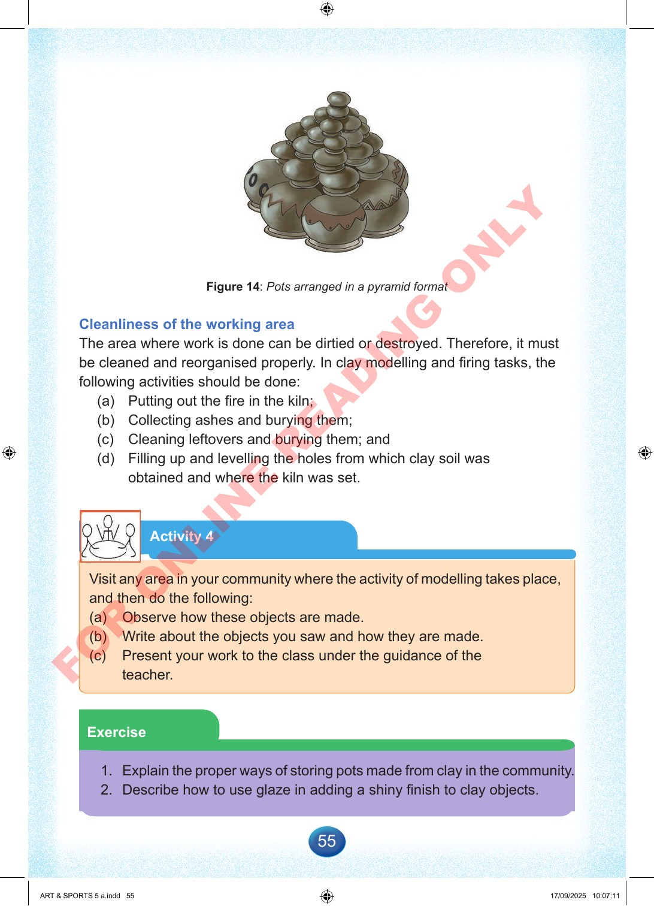

55
Figure
14:
Pots
arranged
in
a
pyramid
format
Cleanliness
of
the
working
area
The
area
where
work
is
done
can
be
dirtied
or
destroyed.
Therefore,
it
must
be
cleaned
and
reorganised
properly.
In
clay
modelling
and
firing
tasks,
the
following
activities
should
be
done:
(a)
Putting
out
the
fire
in
the
kiln;
(b)
Collecting
ashes
and
burying
them;
(c)
Cleaning
leftovers
and
burying
them;
and
(d)
Filling
up
and
levelling
the
holes
from
which
clay
soil
was
obtained
and
where
the
kiln
was
set.
Activity
4
Visit
any
area
in
your
community
where
the
activity
of
modelling
takes
place,
and
then
do
the
following:
(a)
Observe
how
these
objects
are
made.
(b)
Write
about
the
objects
you
saw
and
how
they
are
made.
(c)
Present
your
work
to
the
class
under
the
guidance
of
the
teacher.
Exercise
1.
Explain
the
proper
ways
of
storing
pots
made
from
clay
in
the
community.
2.
Describe
how
to
use
glaze
in
adding
a
shiny
finish
to
clay
objects.
ART
&
SPORTS
5
a.indd
55
ART
&
SPORTS
5
a.indd
55
17/09/2025
10:07:11
17/09/2025
10:07:11
F
O
R
O
N
L
I
N
E
R
E
A
D
I
N
G
O
N
L
Y